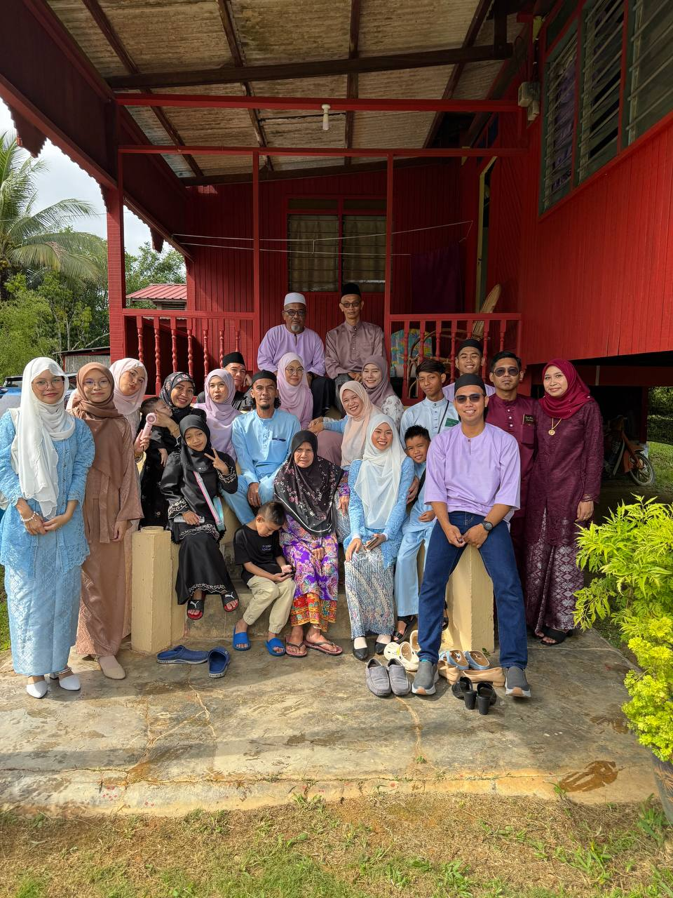
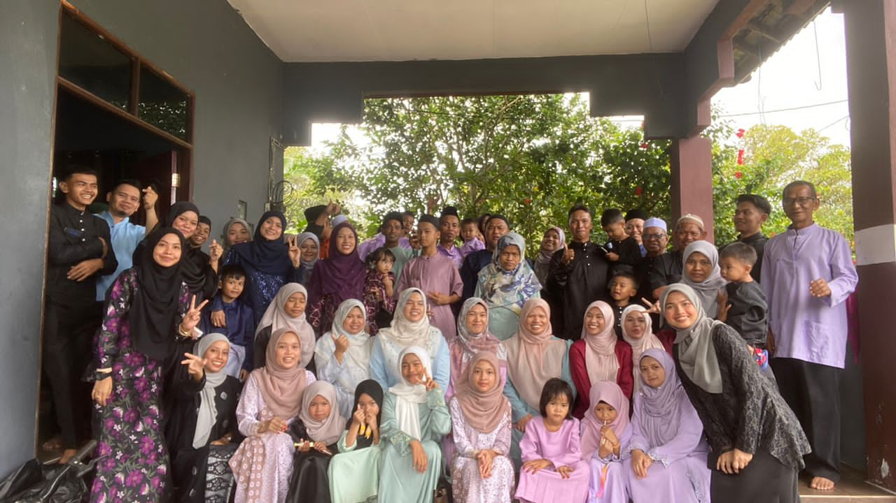
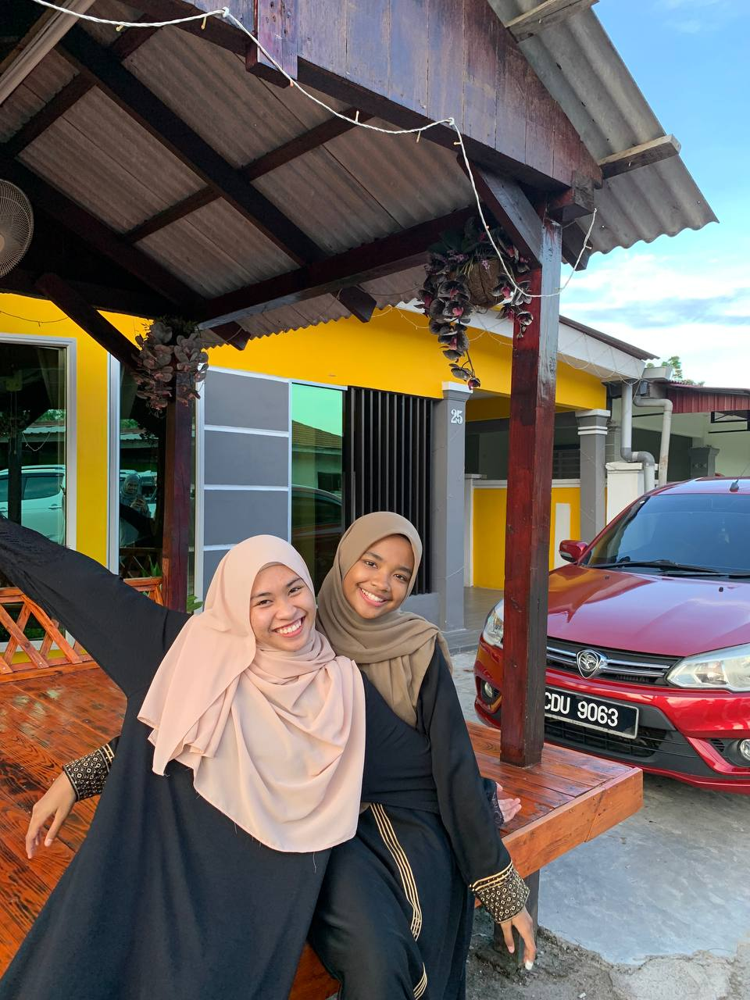
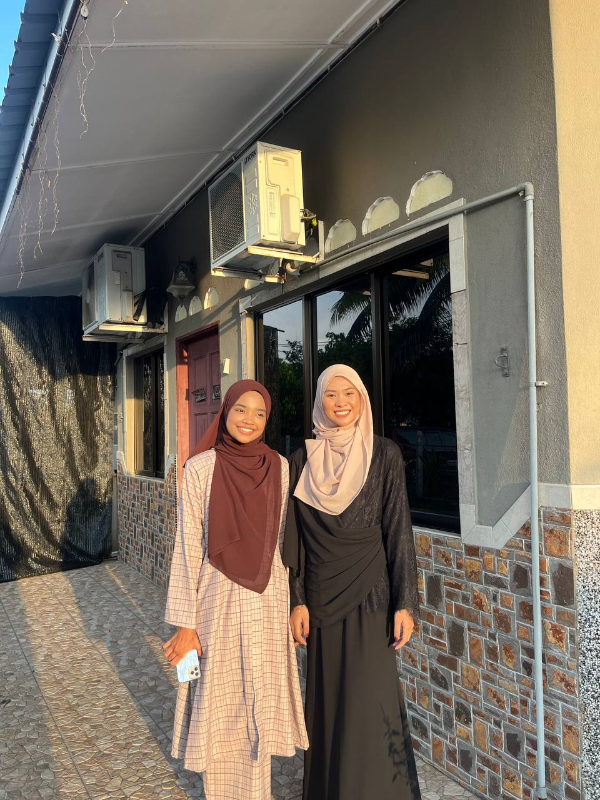

my father side vs my mother sidePicture on the left is my big family on my father sided. My father got 8 siblings including him. On the right is my big family on my mother side. My mother got 10 siblings including herself.


MY BEST FRIEND


This is my bestfriend. Her name is Iesya Atiera. She is my very first best friend. We have known each other about 8 years. We met in our high school back then. We were in the same school about two year and she choose to move into another school. Fortunately, our friendship did not end even we were far away. We only met about twice a year but we are always contact each other with our smart phone. |
|---|